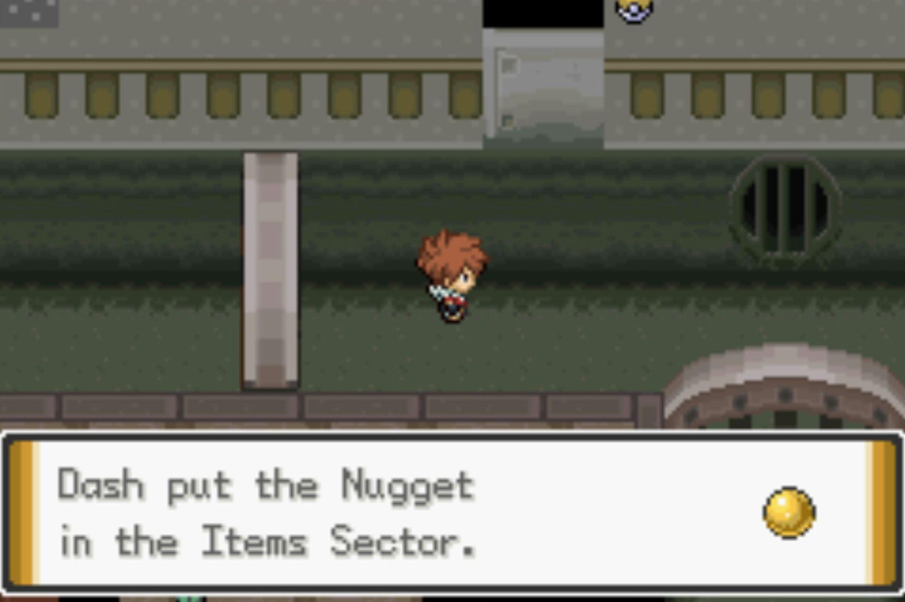
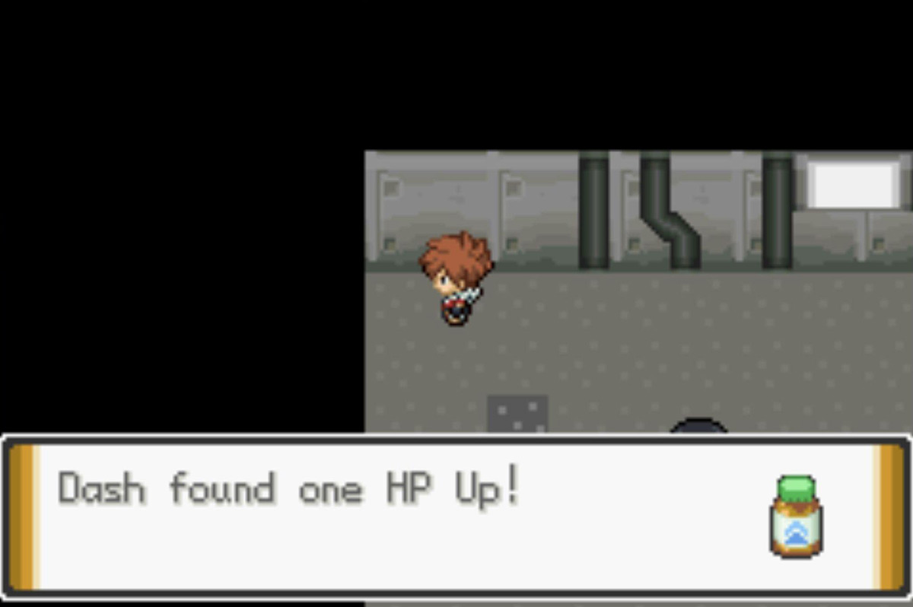
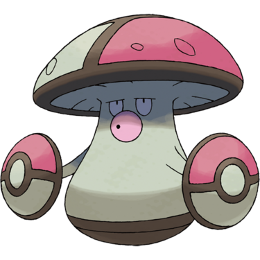
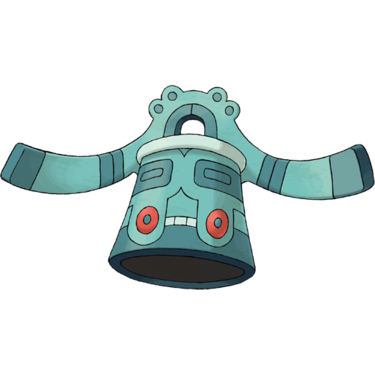
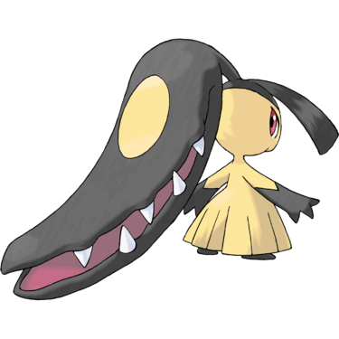
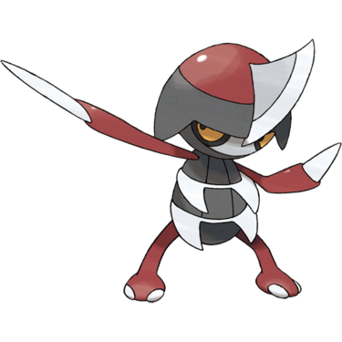
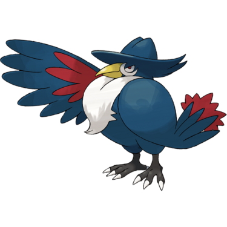

Quick Guide:
- Enter the Antisis Sewers
- Recover the Grimy Socks
- Invade the Black Ferrothorn HQ & solve the puzzles
- Defeat the Black Ferrothorn Boss
Antisis Sewers
{kind=link}
| Points of Interest | |
|---|---|
 |
Scientist Rodney |
 |
Grimy Socks (hidden) |
 |
Worker Dusty |
 |
Science Society Scientist Carolina |
 |
Sewer Science Lab |
 |
Worker Quinn |
 |
Super Nerd Erik |
 |
Worker Ramon |
| Exits and Passages | |
|---|---|
 |
Black Emboar HQ |
 |
Sewer Pipe A |
 |
Sewer Pipe B |
| Requires HM Waterfall | |
 |
Antisis City |
Items
| Items | |
|---|---|
|
Poison Gem (hidden) |
|
| Zygarde Cell |  |
|
Nugget (hidden) |
 |
|
HP Up (in Science Lab) |
 |
|
Zygarde Cell (in Science Lab) |
|
| Zygarde Cell | |
| Max Repel | |
| X Sp. Atk | |
| TM67 Recycle | |
Wild Pokémon
| Wild Pokémon | |
|---|---|
| Sewer | |
|
Grimer Poison |
|
|
Muk Poison |
 |
|
Koffing Poison |
 |
|
Weezing Poison |
 |
|
Raticate Normal |
 |
|
Golbat Poison/Flying |
 |
| Surfing | |
|
Grimer Poison |
|
|
Muk Poison |
|
|
Golbat Poison/Flying |
|
| Fishing | |
|
Grimer Poison (Old Rod) |
|
|
Grimer Poison (Good Rod) |
|
|
Muk Poison (Super Rod) |
|
Trainers
| Trainers | |
|---|---|
| Scientist Rodney | |
|
Muk Poison (Lv.49) |
|
| Worker Dusty | |
|
Klang Steel (Lv.48) |
 |
|
Eelektross Electric (Lv.49) |
|
| Scientist Carolina | |
|
Whirlipede Bug/Poison (Lv.48) |
 |
|
Magneton Electric/Steel (Lv.49) |
 |
|
Amoonguss Grass/Poison (Lv.49) |
 |
| Worker Quinn | |
|
Excadrill Ground/Steel (Lv.48) |
 |
|
Electivire Electric (Lv.49) |
 |
|
Bronzong Steel/Psychic (Lv.48) |
 |
| Super Nerd Erik | |
|
Garbodor Poison (Lv.49) |
 |
|
Jolteon Electric (Lv.48) |
 |
|
Muk Poison (Lv.49) |
|
| Worker Ramon | |
|
Throh Fighting (Lv.49) |
 |
It’s time to complete the third and final mission that the Black Emboar wants you to do for them.
To do that, you’ll have to venture into the depths of the Antisis Sewers.
The Final Mission
Head down the stairs in the Black Emboar HQ and you’ll find yourself in them.

The tunnels and walkways can be confusing to navigate.
First, go west from the staircase until you see a bridge across a sewer canal. Cross it, then walk southwest until you see an opening in a wall.
You’ll get challenged by Scientist Rodney.
After you’ve dealt with him, go north and then turn back down heading southwest until you’re on the very southwest corner of the platform you’re on.
Note: Navigating in the sewers is made even more difficult by the fact that the staircases down to the sewer water level can be easy to miss at first glance. In addition, when sewer grates are perpendicular to you it’s not clear whether they are open or closed, or whether you can walk across them (you can’t).
Head down the staircase to the water level – on the southwest corner of the platform – and walk through the small opening to the south.
You will need a Pokémon that can use Flash – like HMs, you don’t need to actually teach it to a Pokémon, they just need the ability to use it. You should have gotten Flash from the Battle Girl in the Crater Town Poke Mart.
Crawl through the pipe and you’ll end up in the south section of the sewers.
Walk up the staircase and go to the northeast portion of the walkway.
There’s a spot for you to drop into the water and surf east.
Surf east along the sewer channel until you can go south.
Then you’ll see further passage blocked off in every other direction except one.
Surf west until you see a brick sewer platform.

Climb the stairs on the platform and walk west until you’re almost at the far wall.
You may need the Dowsing Machine to find them, but the Grimy Socks are in the very corner of the hallway on the platform.
With that done, go all the way back through the sewer channels and the pipe to get to the north sewers again.
When you’re in the north section, immediately after leaving the sewer path, go east along the bottom of the empty sewer channel.
Ignore the stairs to the southeast and keep following the channel along.
Continue walking north along the bottom level of the sewer channel until you see a staircase leading to a sewer platform. There will be a Scientist roaming around on it as well.
You’ll get a battle from Scientist Carolina, and once you’re done you can head into the doorway to find another Scientist.
Every day, the Scientist inside will give you a random item, depending on how successful her experiment was.
Returning the Grimy Socks
Once you’re finished exploring the sewers, head back upstairs to the HQ and give the Grimy Socks back to their owner. They’ll give you a Black Sludge in thanks.
The Battle of Antisis
With those three missions complete, James sees the opportunity to get rid of the Black Ferrothorn once and for all.
He has a plan to strike them at their headquarters, and he will do it by breaking through to it from the sewers.
James and his whole crew leave for the sewers, and it’s time for you to follow them.
Crawl through the sewer pipe to the south section, this time going southwest along the walkway until you reach the platform from this angle.
Continue along the edge of the platform until you see James and his crew to the southeast of it.
James will bust a hole in the bottom of the Ferrothorn headquarters, and after he does so, the invasion begins.

When James and his goons are through, follow them and you’ll find yourself in Ferrothorn Turf.
Ferrothorn Turf
{kind=link}
| Points of Interest | |
|---|---|
|
2F Electrode Floor Puzzle |
|
Black Ferrothorn Goon A |
|
3F Sequence Puzzle |
|
Black Ferrothorn Goon B |
|
4F Electrode Floor Puzzle |
|
4F Sequence Puzzle |
|
5F Sequence Puzzle |
|
Storage Porygon |
 |
Healing Chansey |
 |
Black Ferrothorn Boss Barbs |
| Exits and Gates | |
|---|---|
|
Antisis Sewers |
|
3F Sequence Puzzle Gate |
|
4F Sequence Puzzle Gate |
 |
5F Sequence Puzzle Gate |
Items
| Items | |
|---|---|
| Rare Candy | |
|
Poke Doll (hidden) |
|
| Full Restore | |
|
Max Potion (hidden) |
|
| Max Elixir | |
Trainers
| Trainers | |
|---|---|
| Black Ferrothorn Goon A | |
|
Ferroseed Grass/Steel (Lv.47) |
 |
|
Throh Fighting (Lv.48) |
|
|
Mawile Steel/Fairy (Lv.49) |
 |
|
Klang Steel (Lv.48) |
|
| Black Ferrothorn Goon B | |
|
Lairon Steel/Rock (Lv.49) |
 |
|
Pawniard Dark/Steel (Lv.48) |
 |
|
Ferroseed Grass/Steel (Lv.47) |
|
You pop up on 1F, and there is pandemonium everywhere – goons fighting goons.
They’re far too busy to take notice of you, so take the northeast staircase to 2F.
2F Electrode Floor Puzzle
It seems like the Scientist gave her Electrode traps to the Black Ferrothorn, because the floor up here is filled with them.
Here’s the path forward:
One wrong step on this floor and you’ll be thrown back to the beginning.
Step 1: From the staircase landing, walk west two steps to the crate.
Step 2: Walk south two steps to the wall.
Step 3: Walk east three steps to the crate.
Step 4: Wait at the crate for the biker to turn his back on you. Then walk north one step, west four steps, south six steps and west one step until you are in a little alcove next to the potted plants on the left-hand side of the hallway.
You must do this quickly before the biker turns around.
Step 5: Wait until the biker turns north, then leave the alcove and walk south one step and east four steps to the crate.
This should take you out of sight.
Step 6: Walk south one step.
Step 7: Walk east two steps.
Step 8: Walk north one step.
Step 9: Go east three steps to the staircase.
Now you’re free to climb the staircase to 3F.
You will see a goon on the left – he will challenge you to a battle. After beating him, go north.
There are three towers with lights on them, slowly changing colors in sequence. You’ll need to press a button on them in the correct order to open the gate to 4F.
3F Sequence Puzzle
Here’s the correct sequence to press:
- North
- East
- North
- West
- East
Once the gate opens, you’re free to proceed to 4F.
There’s another goon to beat up here, as well as two more puzzles to solve.
The first is in the southwest corner – a short Electrode floor that leads to an item.
4F Electrode Floor Puzzle
- Stand on a tile on the southern most row, five steps away from the crate in the corner.
- Walk two steps west.
- Walk two steps north to the wall.
- Walk three steps west to the potted plant.
- Walk one step down.
You’ll pick up a Full Restore, which will be very handy in the battles ahead.
4F Sequence Puzzle
In the southeast corner is another sequence puzzle. Here’s the correct tower order:
- Southwest
- Southeast
- Northwest
- Southeast
- Southwest
- Northwest
- Northeast
This will open the gate so you can head up the northeast staircase.
You’ll see one more sequence puzzle, this time with five towers and a goon in the middle.
If you’re on the easiest difficulty, the goon will not fight you. Otherwise the goon will wait until you’re halfway through the puzzle before attacking.
5F Sequence Puzzle
Here’s the correct order for these towers:
- West
- Southeast
- Southwest
- Southeast
- East
- West
- Southwest
- North
Once that’s over and done with, there’s only one staircase in the building left to take, and that’s straight to the top floor and the boss room.
Black Ferrothorn Boss Battle
You make it all the way to the boss, only to be told that the Black Emboar are outnumbered and you’ll have to fight not to be disposed of there and then.
| Boss Battle (Black Ferrothorn Boss Barbs) | |
|---|---|
|
Alolan Muk Poison/Dark (Lv.50) |
 |
|
Honchkrow Dark/Flying (Lv.49) |
 |
|
Ferrothorn Grass/Steel (Lv.51) |
 |
|
Heracross (Mega) Bug/Fighting (Lv.51) |
|
There’s a variety of types here so more than one strong Pokémon is required – something like Camerupt will work well.
After You Win
Even though you’ve beaten their boss, the Black Ferrothorn are much stronger than the Black Emboar, and James has to leave town in a hurry.

Before leaving, James left an item outside for us to take – a Heracronite.
With the gang war over and everything else in the city taken care of, it’s time to finally face the Antisis Gym and get the ability to use Rock Climb.